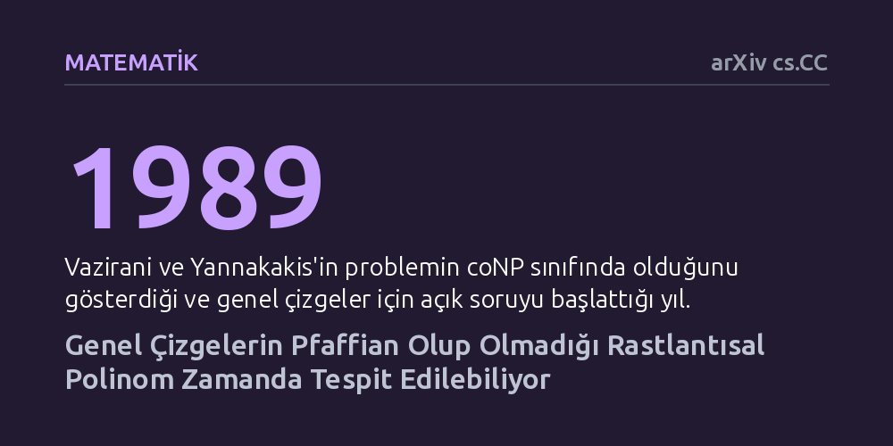

MATEMATIK · arXiv cs.CC · 2026-10-23
Araştırmacılar, genel çizgelerin Pfaffian yönelimine sahip olup olmadığını belirleme probleminin hesaplama karmaşıklığını inceledi. Yönelim testini polinom özdeşlik testine indirgeyerek, problemin rastlantısal polinom zamanda çözülebileceğini ve coRP sınıfında yer aldığını kanıtladılar.
1989'dan bu yana genel çizgeler için çözülemeyen klasik bir problemin, rastlantısallık ve cebirsel yöntemler kullanılarak makul sürede çözülebileceğini gösteriyor.

Çizge teorisinde ve kuramsal bilgisayar biliminde bir ağın yapısını kavramak, çoğu zaman o ağın içinde belirli alt yapıların kaç tane bulunduğunu hesaplamaktan geçer. Özellikle bir çizgedeki "mükemmel eşleşmelerin" —yani her düğümün birbiriyle çakışmadan eşleştiği durumların— sayılması; istatistiksel fizikten kombinatoryal optimizasyona kadar pek çok alanda temel bir ihtiyaçtır. Düzlemsel çizgelerde bu sayım işlemi, çizgenin kenarlarına özel yönler verilerek matris determinantı yardımıyla verimli şekilde yapılabilmektedir; bu elverişli yapıya "Pfaffian yönelimi" adı verilir.
Ancak önümüze konan herhangi bir çizgenin bu özelliği taşıyıp taşımadığını belirlemek, yani Pfaffian tanıma problemi, 1989 yılında Vijay Vazirani ve Mihalis Yannakakis tarafından ele alındığından bu yana açık bir bilmece olarak kalmıştı. Bu iki araştırmacı, problemin coNP sınıfında olduğunu, yani bir çizgenin Pfaffian olmadığını doğrulamanın mümkün olduğunu göstermişti. Ne var ki genel çizgelerin Pfaffian olup olmadığını makul bir sürede teşhis edebilen verimli bir algoritmanın bulunup bulunamayacağı otuz beş yıldır bilinmiyordu.
Bilgisayar bilimciler bu zorlu engeli aşabilmek için uzun yıllar boyunca belirli çizge ailelerine odaklandılar. Nitekim 1999 yılında Robertson, Seymour ve Thomas ile bağımsız biçimde 2004 yılında McCuaig, "iki parçalı" çizgeler için problemi çözmeyi başardı. Bu çalışmalar, düğümleri iki ayrı kümeye ayrılabilen çizgelerde Pfaffian yöneliminin varlığının polinom zamanda —yani bilgisayarların pratikte makul sürede hesaplayabileceği bir hızda— tanınabileceğini kanıtladı.
Fakat iki parçalı çizgeler için bulunan bu yapısal yöntemler genel çizgeleri kapsamıyordu ve aradan geçen onlarca yıla rağmen genel durum aydınlatılamadı. Yeni çalışmanın yazarları Priyanshu Pant ve Ranveer Singh, meseleyi klasik çizge algoritmaları yerine cebirsel hesaplama karmaşıklığı perspektifinden ele alarak düğümü çözmeyi amaçladı.
Yazarlar, verilen bir yönelimin Pfaffian olup olmadığını sınama görevini, kuramsal bilgisayar biliminin köklü problemlerinden biri olan "polinom özdeşlik testi"ne (Polynomial Identity Testing - PIT) dönüştürmeyi başardı. Polinom özdeşlik testi, karmaşık cebirsel ifadelerin sıfıra özdeş olup olmadığını değişkenlere rastgele değerler atayarak son derece yüksek bir doğrulukla ve hızla test etmeye yarayan bir yöntemdir.
Bu matematiksel indirgeme sayesinde genel çizgelerde Pfaffian tanıma problemi için rastlantısal polinom zamanlı bir algoritma elde edildi. Yazarlar böylece problemin "coRP" karmaşıklık sınıfına ait olduğunu gösterdi. Bu sonuca göre, eğer verilen bir çizge Pfaffian değilse algoritma bunu kesin olarak tespit edebilmekte; Pfaffian olduğunda ise sonuca çok yüksek bir olasılıkla doğru biçimde ulaşabilmektedir.
Elde edilen bulgu, 1989'dan beri karmaşıklık statüsü askıda duran klasik bir problemi, deterministik olmasa da rastlantısallığın gücünden faydalanarak pratik hesaplanabilirlik sınırları içine çekmektedir. Çalışma, çizge teorisindeki zorlu kombinatoryal engellerin cebirsel araçlar ve polinom özdeşlik testi yardımıyla aşılabileceğini bir kez daha kanıtlamaktadır.
Bununla birlikte elde edilen çözüm bir nihayet değil, yeni bir başlangıçtır. Rastlantısal algoritmaların rastlantısallıktan arındırılarak deterministik (kesin) polinom zamanda çalışan algoritmalara dönüştürülüp dönüştürülemeyeceği konusu, teorik bilgisayar biliminin en büyük açık alanlarından biridir. Bu çalışma, Pfaffian tanıma probleminin doğrudan "P" sınıfına (deterministik polinom zaman) ait olup olmadığını anlama yolunda kritik bir eşiği aşmış durumdadır.